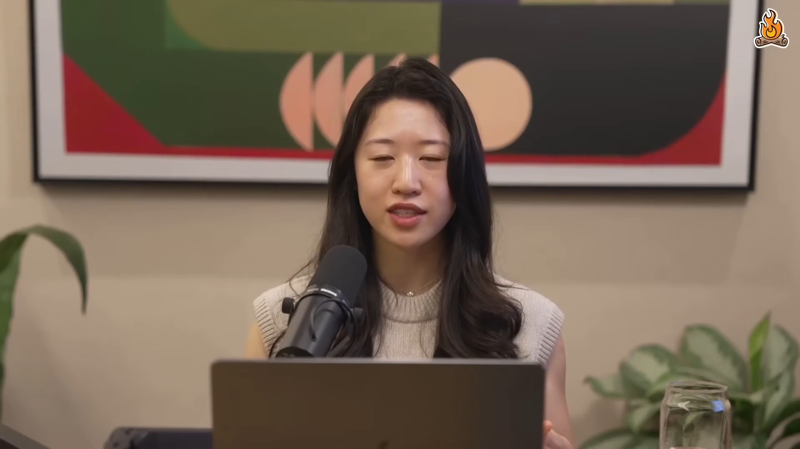
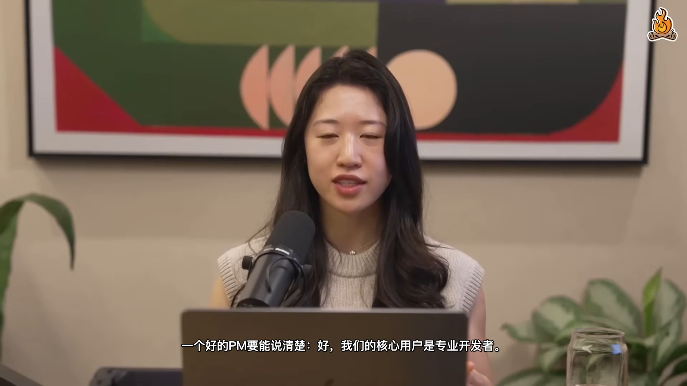

kev-youtube-video-clone-translate
A foreign-language YouTube video, in your language, in the original speakers' voices — with hardcoded subtitles.
Before / After — same 15 seconds
Original · English
Cat Wu responding in English

After · Cloned Chinese
Same voice · Chinese dub + subs

👆 Click either card to play · use headphones to hear the timbre match
Full 30s demo — both speakers
The pipeline
01
Acquire
yt-dlp
02
Clean subs
clean-subs.js
03
Translate
Claude Code
04
Speakers
3-vote
05
Clone voice
Demucs + XTTS
06
Burn + render
ffmpeg ass=
Numbers from the test run
138
segments
0
failures
12m
wall time
93MB
output MP4
Try it on your own video
Inside Mavis, give it a YouTube link and ask to translate + clone voices. The skill handles the rest.